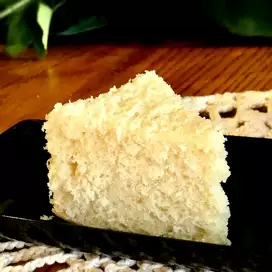

VANILLA CAKE

Description
This is an easy to make, Homemade Vanilla Cake Recipe.
Ingredients
- 1 cup white sugar
- half cup butter
- 2 eggs
- 1 teaspoon vanilla extract
- 1 teaspoon almond extract
- 1.5 cups all-purpose flour
- 3 tablespoons cornstarch
- 1.75 teaspoon baking powder
- half teaspoon salt
- 0.75 cup milk
Steps
- Preheat the oven to 350 degrees F (175 degrees C). Grease and flour a 9x9-inch pan.
- Beat sugar and butter together in a medium bowl until creamy.
Beat in eggs, 1 at a time; stir in vanilla extract and almond extract.
- Combine flour, cornstarch, baking powder, and salt in another bowl. Add to the
creamed mixture and mix well.
Stir in milk until batter is smooth. Pour or spoon batter into the prepared pan.
- Bake in the preheated oven until it springs back to the touch, 30 to 40 minutes.